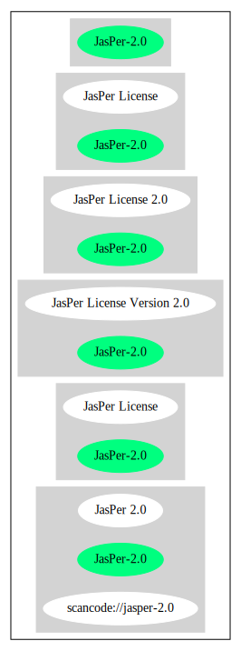

Key |
Value |
|---|---|
Fullname |
JasPer License |
Shortname |
JasPer-2.0 |
Rating |
Go |
Classification |
NoCopyleft |
Other Names:
scancode://jasper-2.0
JasPer 2.0
↑“Rating is: Bronze” (source: BlueOak License List)
Homepage: http://www.ece.uvic.ca/~frodo/jasper/LICENSE
SPDX: http://spdx.org/licenses/JasPer-2.0.json
SPDX: https://spdx.org/licenses/JasPer-2.0.html
http://www.ece.uvic.ca/~mdadams/jasper/LICENSE
JasPer License Version 2.0
Copyright (c) 2001-2006 Michael David Adams
Copyright (c) 1999-2000 Image Power, Inc.
Copyright (c) 1999-2000 The University of British Columbia
All rights reserved.
Permission is hereby granted, free of charge, to any person (the
"User") obtaining a copy of this software and associated documentation
files (the "Software"), to deal in the Software without restriction,
including without limitation the rights to use, copy, modify, merge,
publish, distribute, and/or sell copies of the Software, and to permit
persons to whom the Software is furnished to do so, subject to the
following conditions:
1. The above copyright notices and this permission notice (which
includes the disclaimer below) shall be included in all copies or
substantial portions of the Software.
2. The name of a copyright holder shall not be used to endorse or
promote products derived from the Software without specific prior
written permission.
THIS DISCLAIMER OF WARRANTY CONSTITUTES AN ESSENTIAL PART OF THIS
LICENSE. NO USE OF THE SOFTWARE IS AUTHORIZED HEREUNDER EXCEPT UNDER
THIS DISCLAIMER. THE SOFTWARE IS PROVIDED BY THE COPYRIGHT HOLDERS
"AS IS", WITHOUT WARRANTY OF ANY KIND, EXPRESS OR IMPLIED, INCLUDING
BUT NOT LIMITED TO THE WARRANTIES OF MERCHANTABILITY, FITNESS FOR A
PARTICULAR PURPOSE AND NONINFRINGEMENT OF THIRD PARTY RIGHTS. IN NO
EVENT SHALL THE COPYRIGHT HOLDERS BE LIABLE FOR ANY CLAIM, OR ANY SPECIAL
INDIRECT OR CONSEQUENTIAL DAMAGES, OR ANY DAMAGES WHATSOEVER RESULTING
FROM LOSS OF USE, DATA OR PROFITS, WHETHER IN AN ACTION OF CONTRACT,
NEGLIGENCE OR OTHER TORTIOUS ACTION, ARISING OUT OF OR IN CONNECTION
WITH THE USE OR PERFORMANCE OF THIS SOFTWARE.
NO ASSURANCES ARE
PROVIDED BY THE COPYRIGHT HOLDERS THAT THE SOFTWARE DOES NOT INFRINGE
THE PATENT OR OTHER INTELLECTUAL PROPERTY RIGHTS OF ANY OTHER ENTITY.
EACH COPYRIGHT HOLDER DISCLAIMS ANY LIABILITY TO THE USER FOR CLAIMS
BROUGHT BY ANY OTHER ENTITY BASED ON INFRINGEMENT OF INTELLECTUAL
PROPERTY RIGHTS OR OTHERWISE. AS A CONDITION TO EXERCISING THE RIGHTS
GRANTED HEREUNDER, EACH USER HEREBY ASSUMES SOLE RESPONSIBILITY TO SECURE
ANY OTHER INTELLECTUAL PROPERTY RIGHTS NEEDED, IF ANY.
THE SOFTWARE
IS NOT FAULT-TOLERANT AND IS NOT INTENDED FOR USE IN MISSION-CRITICAL
SYSTEMS, SUCH AS THOSE USED IN THE OPERATION OF NUCLEAR FACILITIES,
AIRCRAFT NAVIGATION OR COMMUNICATION SYSTEMS, AIR TRAFFIC CONTROL
SYSTEMS, DIRECT LIFE SUPPORT MACHINES, OR WEAPONS SYSTEMS, IN WHICH
THE FAILURE OF THE SOFTWARE OR SYSTEM COULD LEAD DIRECTLY TO DEATH,
PERSONAL INJURY, OR SEVERE PHYSICAL OR ENVIRONMENTAL DAMAGE ("HIGH
RISK ACTIVITIES"). THE COPYRIGHT HOLDERS SPECIFICALLY DISCLAIM ANY
EXPRESS OR IMPLIED WARRANTY OF FITNESS FOR HIGH RISK ACTIVITIES.{
"__impliedNames": [
"JasPer-2.0",
"JasPer License",
"scancode://jasper-2.0",
"JasPer 2.0"
],
"__impliedId": "JasPer-2.0",
"facts": {
"SPDX": {
"isSPDXLicenseDeprecated": false,
"spdxFullName": "JasPer License",
"spdxDetailsURL": "http://spdx.org/licenses/JasPer-2.0.json",
"_sourceURL": "https://spdx.org/licenses/JasPer-2.0.html",
"spdxLicIsOSIApproved": false,
"spdxSeeAlso": [
"http://www.ece.uvic.ca/~mdadams/jasper/LICENSE"
],
"_implications": {
"__impliedNames": [
"JasPer-2.0",
"JasPer License"
],
"__impliedId": "JasPer-2.0",
"__isOsiApproved": false,
"__impliedURLs": [
[
"SPDX",
"http://spdx.org/licenses/JasPer-2.0.json"
],
[
null,
"http://www.ece.uvic.ca/~mdadams/jasper/LICENSE"
]
]
},
"spdxLicenseId": "JasPer-2.0"
},
"Scancode": {
"otherUrls": [
"http://www.ece.uvic.ca/~mdadams/jasper/LICENSE"
],
"homepageUrl": "http://www.ece.uvic.ca/~frodo/jasper/LICENSE",
"shortName": "JasPer 2.0",
"textUrls": null,
"text": "JasPer License Version 2.0\n\nCopyright (c) 2001-2006 Michael David Adams\nCopyright (c) 1999-2000 Image Power, Inc.\nCopyright (c) 1999-2000 The University of British Columbia\n\nAll rights reserved.\n\nPermission is hereby granted, free of charge, to any person (the\n\"User\") obtaining a copy of this software and associated documentation\nfiles (the \"Software\"), to deal in the Software without restriction,\nincluding without limitation the rights to use, copy, modify, merge,\npublish, distribute, and/or sell copies of the Software, and to permit\npersons to whom the Software is furnished to do so, subject to the\nfollowing conditions:\n\n1. The above copyright notices and this permission notice (which\nincludes the disclaimer below) shall be included in all copies or\nsubstantial portions of the Software.\n\n2. The name of a copyright holder shall not be used to endorse or\npromote products derived from the Software without specific prior\nwritten permission.\n\nTHIS DISCLAIMER OF WARRANTY CONSTITUTES AN ESSENTIAL PART OF THIS\nLICENSE. NO USE OF THE SOFTWARE IS AUTHORIZED HEREUNDER EXCEPT UNDER\nTHIS DISCLAIMER. THE SOFTWARE IS PROVIDED BY THE COPYRIGHT HOLDERS\n\"AS IS\", WITHOUT WARRANTY OF ANY KIND, EXPRESS OR IMPLIED, INCLUDING\nBUT NOT LIMITED TO THE WARRANTIES OF MERCHANTABILITY, FITNESS FOR A\nPARTICULAR PURPOSE AND NONINFRINGEMENT OF THIRD PARTY RIGHTS. IN NO\nEVENT SHALL THE COPYRIGHT HOLDERS BE LIABLE FOR ANY CLAIM, OR ANY SPECIAL\nINDIRECT OR CONSEQUENTIAL DAMAGES, OR ANY DAMAGES WHATSOEVER RESULTING\nFROM LOSS OF USE, DATA OR PROFITS, WHETHER IN AN ACTION OF CONTRACT,\nNEGLIGENCE OR OTHER TORTIOUS ACTION, ARISING OUT OF OR IN CONNECTION\nWITH THE USE OR PERFORMANCE OF THIS SOFTWARE. \n\nNO ASSURANCES ARE\nPROVIDED BY THE COPYRIGHT HOLDERS THAT THE SOFTWARE DOES NOT INFRINGE\nTHE PATENT OR OTHER INTELLECTUAL PROPERTY RIGHTS OF ANY OTHER ENTITY.\nEACH COPYRIGHT HOLDER DISCLAIMS ANY LIABILITY TO THE USER FOR CLAIMS\nBROUGHT BY ANY OTHER ENTITY BASED ON INFRINGEMENT OF INTELLECTUAL\nPROPERTY RIGHTS OR OTHERWISE. AS A CONDITION TO EXERCISING THE RIGHTS\nGRANTED HEREUNDER, EACH USER HEREBY ASSUMES SOLE RESPONSIBILITY TO SECURE\nANY OTHER INTELLECTUAL PROPERTY RIGHTS NEEDED, IF ANY. \n\nTHE SOFTWARE\nIS NOT FAULT-TOLERANT AND IS NOT INTENDED FOR USE IN MISSION-CRITICAL\nSYSTEMS, SUCH AS THOSE USED IN THE OPERATION OF NUCLEAR FACILITIES,\nAIRCRAFT NAVIGATION OR COMMUNICATION SYSTEMS, AIR TRAFFIC CONTROL\nSYSTEMS, DIRECT LIFE SUPPORT MACHINES, OR WEAPONS SYSTEMS, IN WHICH\nTHE FAILURE OF THE SOFTWARE OR SYSTEM COULD LEAD DIRECTLY TO DEATH,\nPERSONAL INJURY, OR SEVERE PHYSICAL OR ENVIRONMENTAL DAMAGE (\"HIGH\nRISK ACTIVITIES\"). THE COPYRIGHT HOLDERS SPECIFICALLY DISCLAIM ANY\nEXPRESS OR IMPLIED WARRANTY OF FITNESS FOR HIGH RISK ACTIVITIES.",
"category": "Permissive",
"osiUrl": null,
"owner": "JasPer Project",
"_sourceURL": "https://github.com/nexB/scancode-toolkit/blob/develop/src/licensedcode/data/licenses/jasper-2.0.yml",
"key": "jasper-2.0",
"name": "JasPer License 2.0",
"spdxId": "JasPer-2.0",
"notes": null,
"_implications": {
"__impliedNames": [
"scancode://jasper-2.0",
"JasPer 2.0",
"JasPer-2.0"
],
"__impliedId": "JasPer-2.0",
"__impliedCopyleft": [
[
"Scancode",
"NoCopyleft"
]
],
"__calculatedCopyleft": "NoCopyleft",
"__impliedText": "JasPer License Version 2.0\n\nCopyright (c) 2001-2006 Michael David Adams\nCopyright (c) 1999-2000 Image Power, Inc.\nCopyright (c) 1999-2000 The University of British Columbia\n\nAll rights reserved.\n\nPermission is hereby granted, free of charge, to any person (the\n\"User\") obtaining a copy of this software and associated documentation\nfiles (the \"Software\"), to deal in the Software without restriction,\nincluding without limitation the rights to use, copy, modify, merge,\npublish, distribute, and/or sell copies of the Software, and to permit\npersons to whom the Software is furnished to do so, subject to the\nfollowing conditions:\n\n1. The above copyright notices and this permission notice (which\nincludes the disclaimer below) shall be included in all copies or\nsubstantial portions of the Software.\n\n2. The name of a copyright holder shall not be used to endorse or\npromote products derived from the Software without specific prior\nwritten permission.\n\nTHIS DISCLAIMER OF WARRANTY CONSTITUTES AN ESSENTIAL PART OF THIS\nLICENSE. NO USE OF THE SOFTWARE IS AUTHORIZED HEREUNDER EXCEPT UNDER\nTHIS DISCLAIMER. THE SOFTWARE IS PROVIDED BY THE COPYRIGHT HOLDERS\n\"AS IS\", WITHOUT WARRANTY OF ANY KIND, EXPRESS OR IMPLIED, INCLUDING\nBUT NOT LIMITED TO THE WARRANTIES OF MERCHANTABILITY, FITNESS FOR A\nPARTICULAR PURPOSE AND NONINFRINGEMENT OF THIRD PARTY RIGHTS. IN NO\nEVENT SHALL THE COPYRIGHT HOLDERS BE LIABLE FOR ANY CLAIM, OR ANY SPECIAL\nINDIRECT OR CONSEQUENTIAL DAMAGES, OR ANY DAMAGES WHATSOEVER RESULTING\nFROM LOSS OF USE, DATA OR PROFITS, WHETHER IN AN ACTION OF CONTRACT,\nNEGLIGENCE OR OTHER TORTIOUS ACTION, ARISING OUT OF OR IN CONNECTION\nWITH THE USE OR PERFORMANCE OF THIS SOFTWARE. \n\nNO ASSURANCES ARE\nPROVIDED BY THE COPYRIGHT HOLDERS THAT THE SOFTWARE DOES NOT INFRINGE\nTHE PATENT OR OTHER INTELLECTUAL PROPERTY RIGHTS OF ANY OTHER ENTITY.\nEACH COPYRIGHT HOLDER DISCLAIMS ANY LIABILITY TO THE USER FOR CLAIMS\nBROUGHT BY ANY OTHER ENTITY BASED ON INFRINGEMENT OF INTELLECTUAL\nPROPERTY RIGHTS OR OTHERWISE. AS A CONDITION TO EXERCISING THE RIGHTS\nGRANTED HEREUNDER, EACH USER HEREBY ASSUMES SOLE RESPONSIBILITY TO SECURE\nANY OTHER INTELLECTUAL PROPERTY RIGHTS NEEDED, IF ANY. \n\nTHE SOFTWARE\nIS NOT FAULT-TOLERANT AND IS NOT INTENDED FOR USE IN MISSION-CRITICAL\nSYSTEMS, SUCH AS THOSE USED IN THE OPERATION OF NUCLEAR FACILITIES,\nAIRCRAFT NAVIGATION OR COMMUNICATION SYSTEMS, AIR TRAFFIC CONTROL\nSYSTEMS, DIRECT LIFE SUPPORT MACHINES, OR WEAPONS SYSTEMS, IN WHICH\nTHE FAILURE OF THE SOFTWARE OR SYSTEM COULD LEAD DIRECTLY TO DEATH,\nPERSONAL INJURY, OR SEVERE PHYSICAL OR ENVIRONMENTAL DAMAGE (\"HIGH\nRISK ACTIVITIES\"). THE COPYRIGHT HOLDERS SPECIFICALLY DISCLAIM ANY\nEXPRESS OR IMPLIED WARRANTY OF FITNESS FOR HIGH RISK ACTIVITIES.",
"__impliedURLs": [
[
"Homepage",
"http://www.ece.uvic.ca/~frodo/jasper/LICENSE"
],
[
null,
"http://www.ece.uvic.ca/~mdadams/jasper/LICENSE"
]
]
}
},
"Cavil": {
"implications": {
"__impliedNames": [
"JasPer-2.0",
"JasPer-2.0"
],
"__impliedId": "JasPer-2.0"
},
"shortname": "JasPer-2.0",
"riskInt": 1,
"trademarkInt": 0,
"opinionInt": 0,
"otherNames": [
"JasPer-2.0"
],
"patentInt": 0
},
"BlueOak License List": {
"BlueOakRating": "Bronze",
"url": "https://spdx.org/licenses/JasPer-2.0.html",
"isPermissive": true,
"_sourceURL": "https://blueoakcouncil.org/list",
"name": "JasPer License",
"id": "JasPer-2.0",
"_implications": {
"__impliedNames": [
"JasPer-2.0",
"JasPer License"
],
"__impliedJudgement": [
[
"BlueOak License List",
{
"tag": "PositiveJudgement",
"contents": "Rating is: Bronze"
}
]
],
"__impliedCopyleft": [
[
"BlueOak License List",
"NoCopyleft"
]
],
"__calculatedCopyleft": "NoCopyleft",
"__impliedURLs": [
[
"SPDX",
"https://spdx.org/licenses/JasPer-2.0.html"
]
]
}
}
},
"__impliedJudgement": [
[
"BlueOak License List",
{
"tag": "PositiveJudgement",
"contents": "Rating is: Bronze"
}
]
],
"__impliedCopyleft": [
[
"BlueOak License List",
"NoCopyleft"
],
[
"Scancode",
"NoCopyleft"
]
],
"__calculatedCopyleft": "NoCopyleft",
"__isOsiApproved": false,
"__impliedText": "JasPer License Version 2.0\n\nCopyright (c) 2001-2006 Michael David Adams\nCopyright (c) 1999-2000 Image Power, Inc.\nCopyright (c) 1999-2000 The University of British Columbia\n\nAll rights reserved.\n\nPermission is hereby granted, free of charge, to any person (the\n\"User\") obtaining a copy of this software and associated documentation\nfiles (the \"Software\"), to deal in the Software without restriction,\nincluding without limitation the rights to use, copy, modify, merge,\npublish, distribute, and/or sell copies of the Software, and to permit\npersons to whom the Software is furnished to do so, subject to the\nfollowing conditions:\n\n1. The above copyright notices and this permission notice (which\nincludes the disclaimer below) shall be included in all copies or\nsubstantial portions of the Software.\n\n2. The name of a copyright holder shall not be used to endorse or\npromote products derived from the Software without specific prior\nwritten permission.\n\nTHIS DISCLAIMER OF WARRANTY CONSTITUTES AN ESSENTIAL PART OF THIS\nLICENSE. NO USE OF THE SOFTWARE IS AUTHORIZED HEREUNDER EXCEPT UNDER\nTHIS DISCLAIMER. THE SOFTWARE IS PROVIDED BY THE COPYRIGHT HOLDERS\n\"AS IS\", WITHOUT WARRANTY OF ANY KIND, EXPRESS OR IMPLIED, INCLUDING\nBUT NOT LIMITED TO THE WARRANTIES OF MERCHANTABILITY, FITNESS FOR A\nPARTICULAR PURPOSE AND NONINFRINGEMENT OF THIRD PARTY RIGHTS. IN NO\nEVENT SHALL THE COPYRIGHT HOLDERS BE LIABLE FOR ANY CLAIM, OR ANY SPECIAL\nINDIRECT OR CONSEQUENTIAL DAMAGES, OR ANY DAMAGES WHATSOEVER RESULTING\nFROM LOSS OF USE, DATA OR PROFITS, WHETHER IN AN ACTION OF CONTRACT,\nNEGLIGENCE OR OTHER TORTIOUS ACTION, ARISING OUT OF OR IN CONNECTION\nWITH THE USE OR PERFORMANCE OF THIS SOFTWARE. \n\nNO ASSURANCES ARE\nPROVIDED BY THE COPYRIGHT HOLDERS THAT THE SOFTWARE DOES NOT INFRINGE\nTHE PATENT OR OTHER INTELLECTUAL PROPERTY RIGHTS OF ANY OTHER ENTITY.\nEACH COPYRIGHT HOLDER DISCLAIMS ANY LIABILITY TO THE USER FOR CLAIMS\nBROUGHT BY ANY OTHER ENTITY BASED ON INFRINGEMENT OF INTELLECTUAL\nPROPERTY RIGHTS OR OTHERWISE. AS A CONDITION TO EXERCISING THE RIGHTS\nGRANTED HEREUNDER, EACH USER HEREBY ASSUMES SOLE RESPONSIBILITY TO SECURE\nANY OTHER INTELLECTUAL PROPERTY RIGHTS NEEDED, IF ANY. \n\nTHE SOFTWARE\nIS NOT FAULT-TOLERANT AND IS NOT INTENDED FOR USE IN MISSION-CRITICAL\nSYSTEMS, SUCH AS THOSE USED IN THE OPERATION OF NUCLEAR FACILITIES,\nAIRCRAFT NAVIGATION OR COMMUNICATION SYSTEMS, AIR TRAFFIC CONTROL\nSYSTEMS, DIRECT LIFE SUPPORT MACHINES, OR WEAPONS SYSTEMS, IN WHICH\nTHE FAILURE OF THE SOFTWARE OR SYSTEM COULD LEAD DIRECTLY TO DEATH,\nPERSONAL INJURY, OR SEVERE PHYSICAL OR ENVIRONMENTAL DAMAGE (\"HIGH\nRISK ACTIVITIES\"). THE COPYRIGHT HOLDERS SPECIFICALLY DISCLAIM ANY\nEXPRESS OR IMPLIED WARRANTY OF FITNESS FOR HIGH RISK ACTIVITIES.",
"__impliedURLs": [
[
"SPDX",
"http://spdx.org/licenses/JasPer-2.0.json"
],
[
null,
"http://www.ece.uvic.ca/~mdadams/jasper/LICENSE"
],
[
"SPDX",
"https://spdx.org/licenses/JasPer-2.0.html"
],
[
"Homepage",
"http://www.ece.uvic.ca/~frodo/jasper/LICENSE"
]
]
}